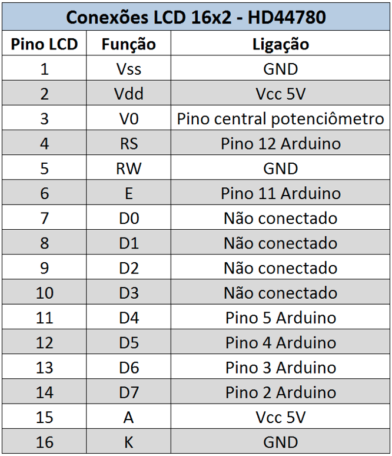
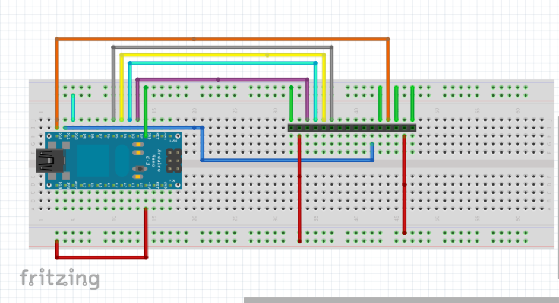
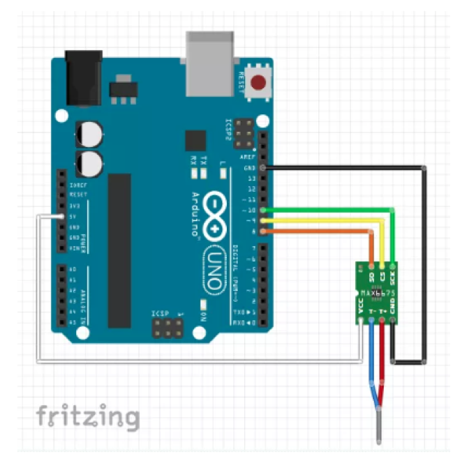
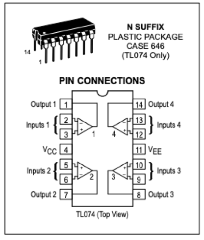
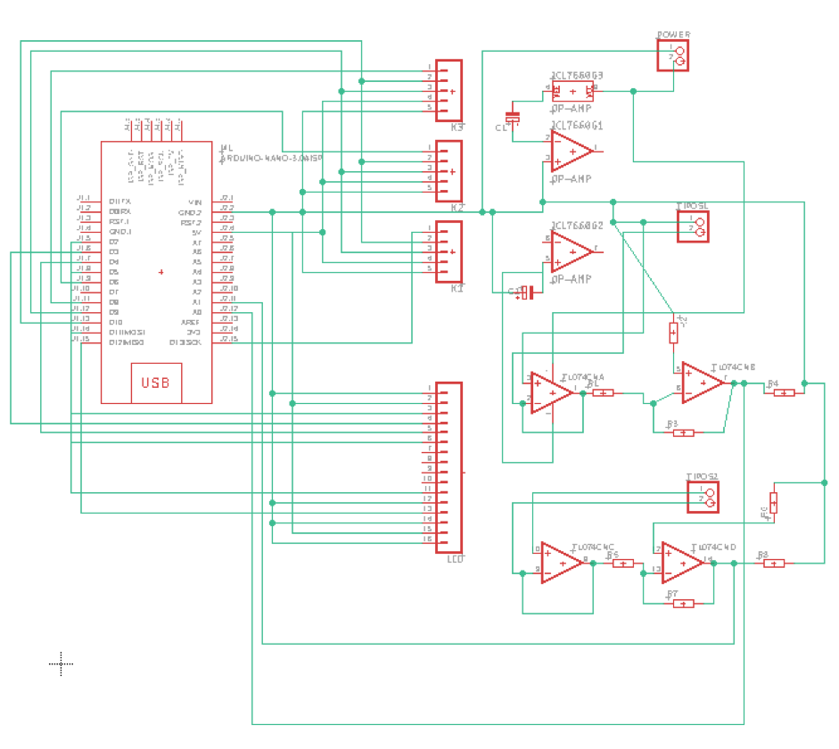
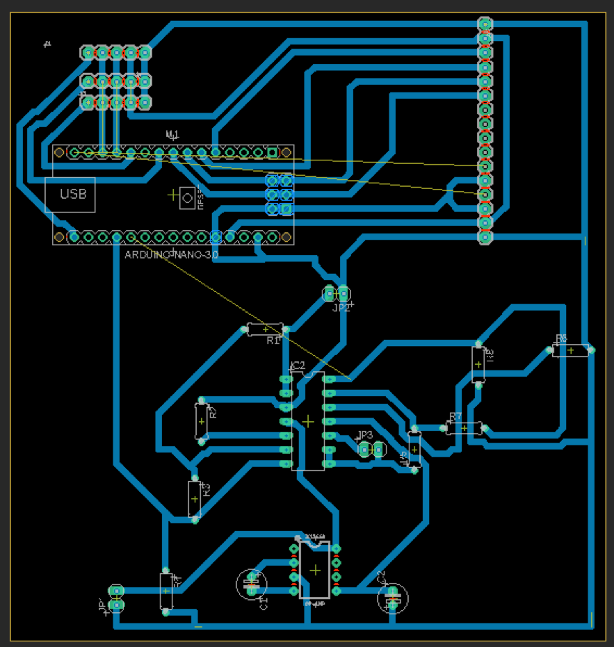
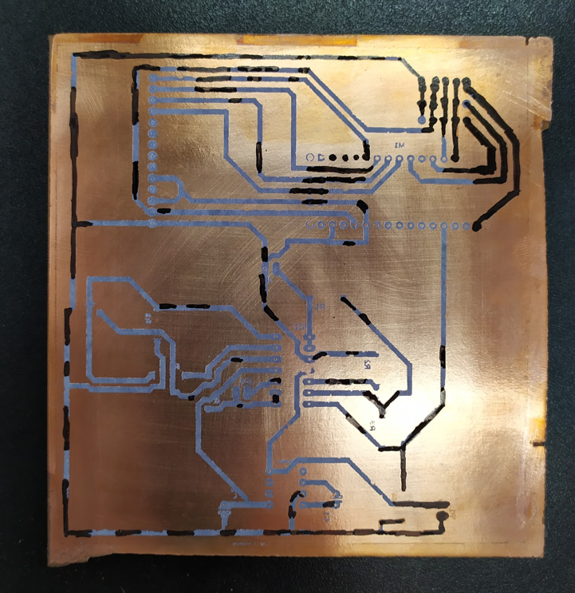
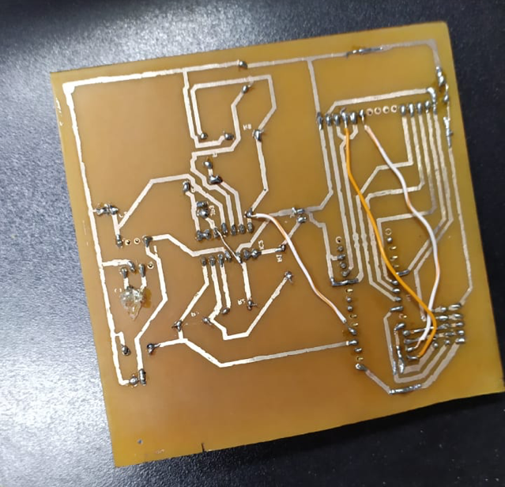
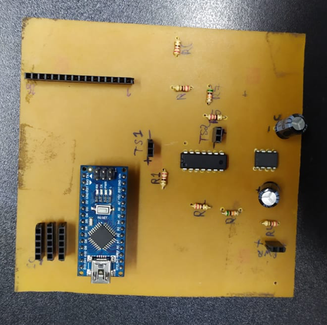
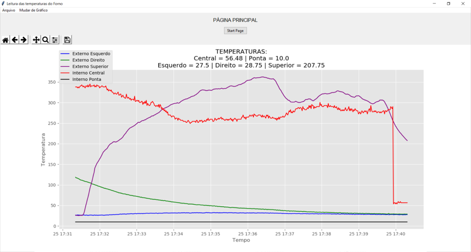

Forge temperature capture!
Powered by: Arduino and Python.
This project has been made to help the group of the college “Aço Damasco” - (FHO),
to capture the temperature from the forge and generate graphics.
To be easy to repeat the hardness on
the Damascus steel. Using Arduino and a few sensors K-type and S-type.
First, we got the inputs for de LCD display.
This is the setup to connect the LCD display to Arduino. you need (LiquidCrystal.h) library.
This is the setup to connect the K-type sensor, also is needed a library (max6675.h) to the Arduino read the temperature.
For the S-type sensor was different, we had to make amp op on the PCB board, to the Arduino can read the sensor. Using an ICL7660S to make possible to read.
To design the PCB the EAGLE software was needed.
The design was almost ready to be print.
After we engrave no the copper.
After the fret, we solder the components.

After assembly all together we tested on the forge, and generate the graphics.
